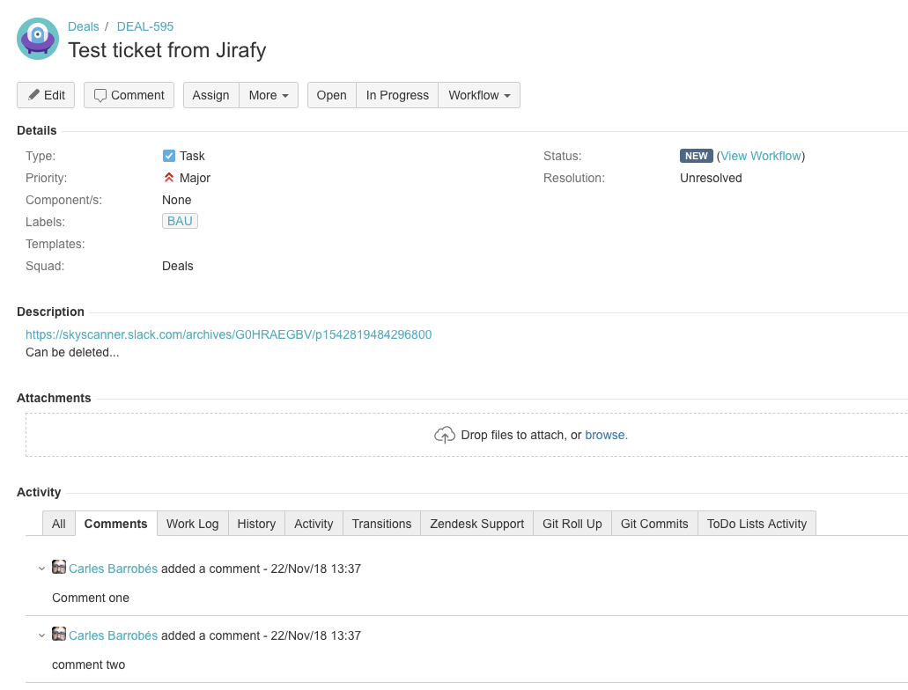

-- heading # What is Jirafy Jirafy is a Slack bot that can **turn a slack conversation into a ticket**, and will be able to **keep both in sync**. -- whoami center The DET/Jirafy team (February/March): ``` > Carles Barrobés > Iain Bowman > Iain Jess > Patrick Menlove > Richard North > Tamas Flamich ``` -- # Context - We have successfully consolidated the the first line of support into a busy **`#det-support`** channel - However, there are still issues that need to be followed upon, and creating a ticket can be bit of a tedious process - There could be a bot for that! -- # The Jirafy feature set Create a JIRA ticket with the least effort: - Add a comment to a thread, e.g. `@jirafy DO Deployments for lambdas to new accounts fail` - Ticket will include: - body and comments from the thread, plus a link to Slack - a "BAU" tag Keep things in sync: - In particular, changes in JIRA should notify the thread -- # The conversation in slack <img src="slackchat.png" style="width:80vh; display: block; margin: 0px auto;"/> -- # A ticket created by Jirafy  -- heading # Thanks!